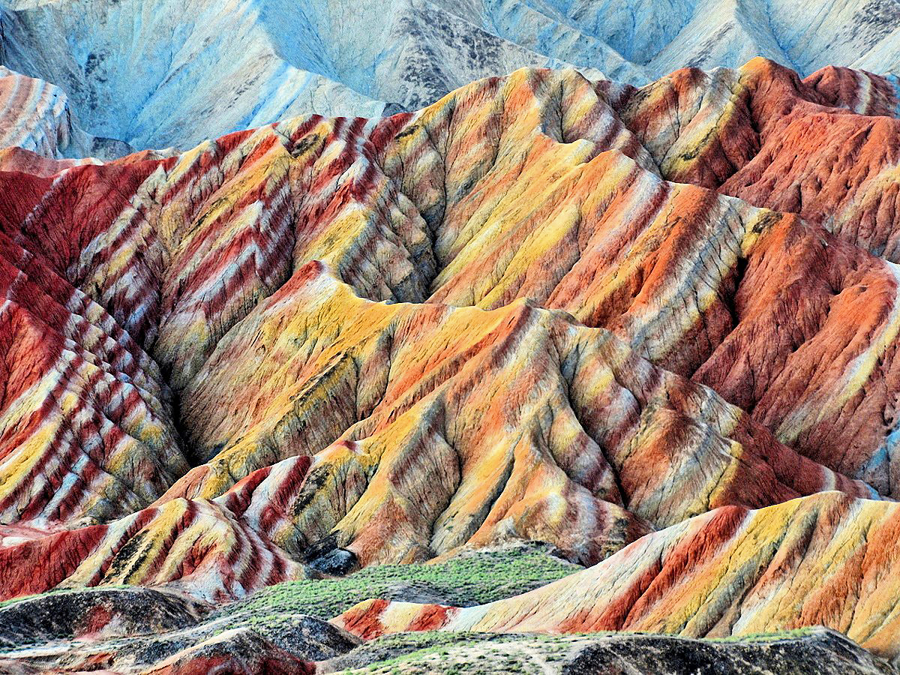

Кольорові скелі Чжан'є Данкс, Китай
Унікальні кольорові скелі Чжан'є Данкс знаходяться в Китах, в провінції Ганьсу. Кольорові скелі складаються з червоних пісковиків і конгламератів, в основному крейдяному періоді. Такі утворення є унікальним типом петрографічної геоморфології, що існують тільки тут. Кольорові скелі включені до Списку Всесвітньої спадщини